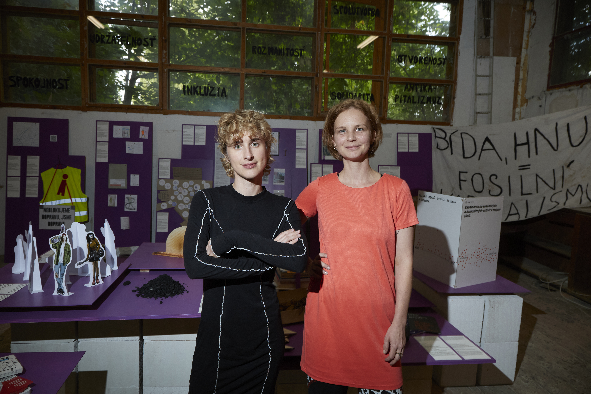
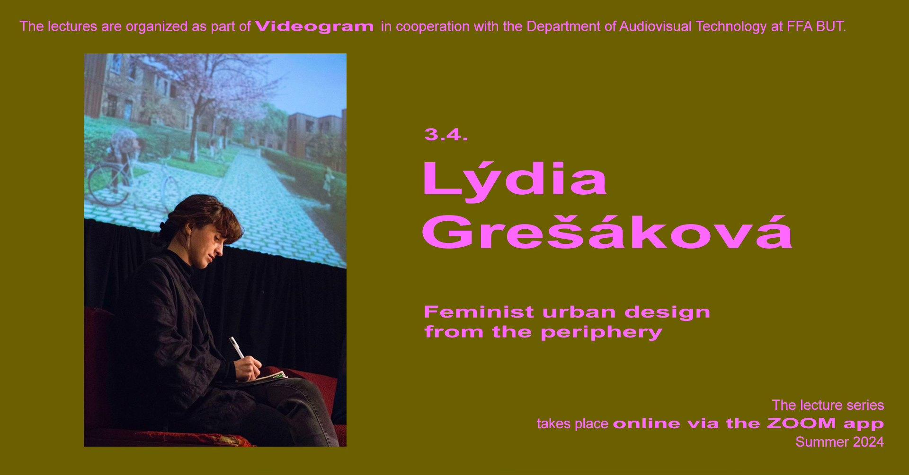
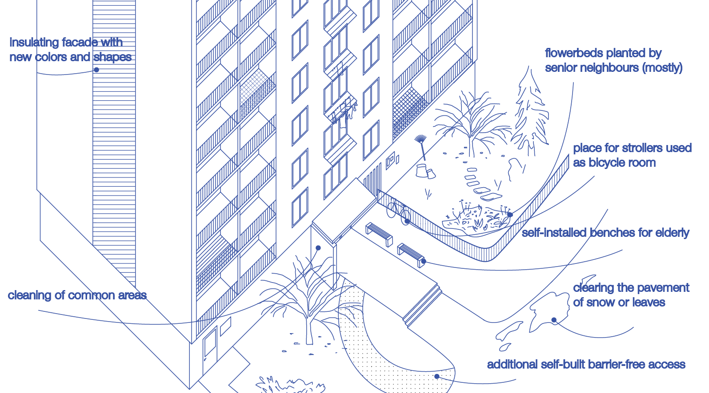
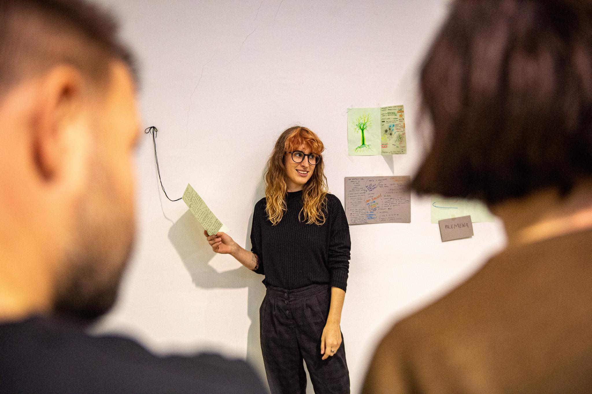
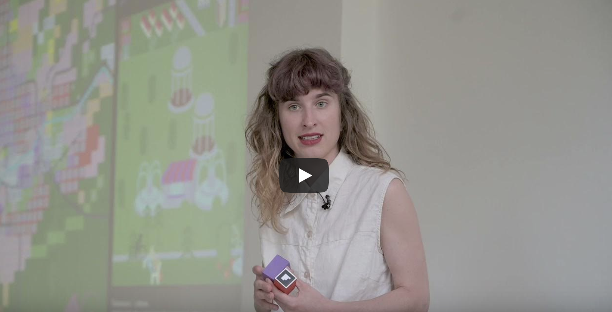
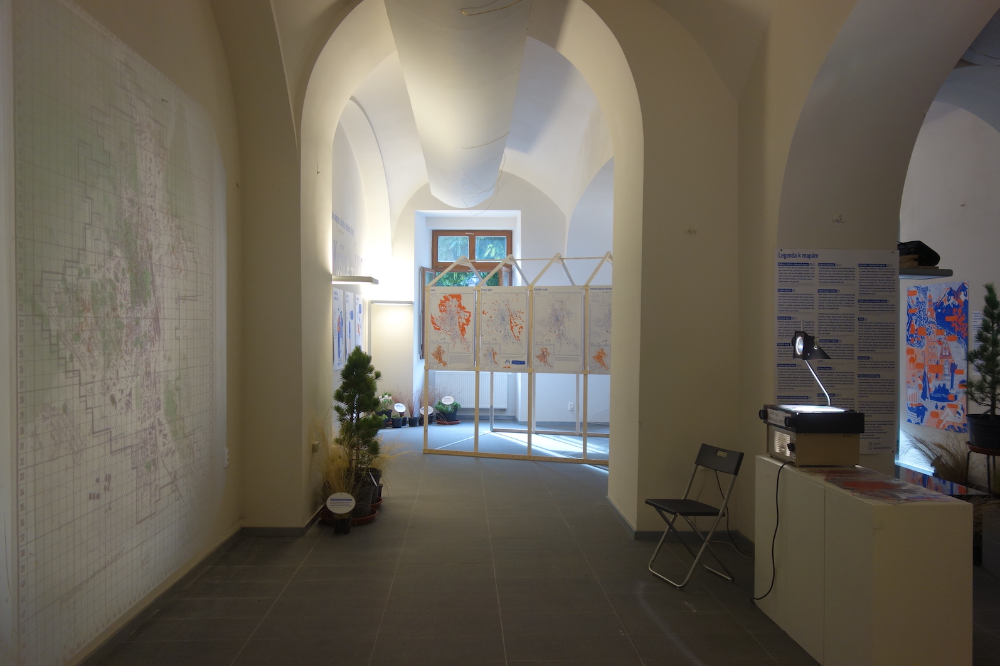
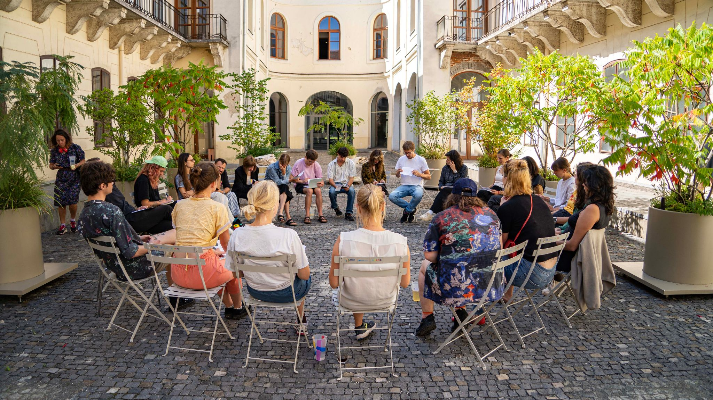

2026
Exhibiting
Czech and Slovak Spatial Practice for 99%
How to create spaces that truly reflect the needs of the communities concerned. The exhibition offers a view of what spatial practice can mean for the so called 99%, reading space as a living entity made of buildings, social connections, rules, and daily rituals. A record of contemporary Czech and Slovak initiatives, and a call for planning that is inclusive and equitable rather than shaped around the most privileged one percent.
Curators and research authors: Lýdia Grešáková, Zuzana Tabačková

2025
Writing
Staying with the Trouble: Feminist Spatial Practices and Hybrid Agency in Slovakia and the Czech Republic
Article, Dimensions. Journal of Architectural Knowledge.
Read the article
2025
Writing
Drawing common futures: with mapping workshops and images towards climate caring spatial practice in Slovakia
Book chapter, with Viktória Mravčáková. In: Renner, Dietzsch, Tschoepe, Käser, Balzan (eds.), Participatory Images: Fostering Dialogue Through Image Making in the Context of Urban Planning. Bielefeld: Transcript Verlag.
2025
Writing
Housing in Times of Crisis
Edited volume and book chapter, with Viktória Mravčáková (eds.). Košice: Spolka.
Get the book
2024
Speaking
Feminist urban design from the periphery
Online lecture, Videogram platform. Presented feminist spatial practice and context specific approaches, showing how perspectives from the periphery of planning can address the climate crisis. The Videogram series, active since 2009, archives over one hundred forty recorded lectures.
Watch the lecture

2024
Speaking
Interpreters of the more than human world? Spatial practice for the 99%
Conference talk. 9th Brno Conference of Urban Studies, Masaryk University, 23 May 2024.
More about the conference
2024
Speaking
Spaces for the 99%: mapping feminist planning culture in Slovakia and the Czech Republic
Conference talk, with Zuzana Tabačková. Women designing and planning for social equality, Zurich University of Applied Sciences, Winterthur, 28 June 2024.
More about the conference
2024
Speaking
Never Never School for the Living Summer School
Spolka //Conference talk, with Viktória Mravčáková. Living Summer School conference, Kortrijk, 5 September 2024.
More about the conference
2024
ResearchingExhibiting
Restart: Transformations in Modern Housing Estates, Tallinn Architecture Biennale
Spolka //Participated with the Spolka collective, showing artistic research on common spaces in housing estates through interviews, ethnography, photography, and architecture. A book of the same title was launched at the Estonian Academy of Arts, where she also gave a public talk. Chapter: Laundry Room, Stroller Room, Meeting Room: Socialist Housing Through the Prism of Caring Architecture.
9. 10. 2024 to 16. 10. 2024, Estonian Academy of Arts, Tallinn
More about the biennale

From the exhibition at the Biennale in Estonia, © Spolka 2024
2023
Exhibiting
Liberated Space: Care, Architecture, Feminism
Spolka //The first exploration of feminist architecture within the Czechoslovak context. Spolka presented a participatory installation based on the work of the Never Never School, including a research diary, a hand sewn textile photo book of learning spaces, and a participatory tablecloth. Other exhibitors included Architektky, Woven, and Emília Rigová.
21. 9. 2023 to 28. 4. 2024, Bratislava City Gallery. Curators: Petra Hlaváčková, Nicole Sabella
More about the exhibition
2023
Coordinating
Klíma ťa potrebuje (Climate Needs You Slovakia)
Spolka //Consulting, designing, and facilitating regional meetings for the youth NGO.

From facilitations, © Monika Kováčová 2022
2022
Coordinating
Year of Climate Care: Unconference with Educators
Spolka //Co-designed and co-facilitated. Spolka (2022), We the Educators. Tools for learners and teachers with climate care, in Year of Climate Care.
Read more
2022
Coordinating
Climate Care Academy
Spolka //Designed and facilitated. City, Climate Refugees and Architecture: Acknowledging New Roles, New Professions and Old Professions That Matter, in Year of Climate Care.
Read more
2022
Researching
Places in Slovakia and the Czech Republic: the reality of new, feminist forms of their creation
Research supported by public funding from the Slovak Arts Council. Research supervisors: Mária Beňačková Rišková, Adriana Jesenková, Zuzana Tabačková, Angela Million.
2022
CoordinatingResearching
Project management and participatory process in MÚSES+
Spolka //The city of Veľký Šariš initiated a project on the Local Territorial System of Ecological Stability with added social value. Led an interdisciplinary expert team, co-designed workshops, and facilitated public engagement. The resulting strategic document, the first of its kind in Slovakia, links ecology with urban planning and tourism, with direct participation from over three hundred locals.
More about the project
2021
ResearchingWritingExhibiting
Mestometer (City Meter)
Spolka //An interdisciplinary project combining urbanism, art, game design, and sociology in a playful exhibition on land use planning from the local perspective in Košice. Co-edited a bilingual publication: Playing Mestometer: Why Do Cities Need a Zoning Plan? Košice: CIKE, Spolka.
Watch the video

From Mestometer video, © Samuel Velebný 2021
2021
Researching
Envisioning possible futures through sound mapping: House of Culture Družba
Part of sound artist Ján Solčáni's project. Led the ethnographic team and designed a mapping exercise for sound and photography artists exploring the abandoned Družba cultural house in Levice. Wrote speculative texts on the site's futures in 2030 and 2050, drawing on feminist, political, and ecological theory.
Lecture by Ján Solčáni
2021
ResearchingSpeaking
Spatial practices from the margins
Conference talk preceded by collaborative independent qualitative research, with Zuzana Tabačková. Urban Movements and Local Politics in CEE Countries: Recent Developments and Conceptual Ambivalences, CEFRES, Prague and online, 5 November 2021.
More about the conference
2020
ResearchingExhibiting
Košice ±40°C: who, what, and how will be most affected by climate extremes
Spolka //Part of a participatory project for the city's Adaptation Strategy, involving experts, companies, institutions, and locals. Contributed sociological research and, as one of the curators, co-developed playful elements, wrote accessible texts, and moderated events. Set in a greenhouse inspired space with drought resistant plants and video projections.
17. 9. 2020 to 2. 10. 2020, Východoslovenská galéria Košice. Curatorial team Spolka+: Lýdia Grešáková, Katarína Onderková, Zuzana Tabačková
More about the exhibition

Exhibition Košice ±40°C, who, what and how will be most affected by climate extremes, © Spolka 2020
2020
Writing
Mapping with Care as an Outline for Post-neoliberal Architecture Methodologies: Tools of the Never Never School
Article, with Zuzana Tabačková and Zuzana Révészová. Architektúra & Urbanizmus 54 (1 to 2): 6 to 19.
2020
Writing
Mapping the In-Between. Interdisciplinary Methods for Envisioning Other Futures
Edited volume, with Zuzana Tabačková and Spolka (eds.). Košice: Spolka.
2020
Researching
Institute of Urban and Regional Planning, TU Berlin
Research posting: Mapping for Change? Critical cartography approaches to drive socio-environmental urban transformations; Critical Mapping in Municipalist Movements; The Spatial Knowledge of Children and Young Adults and its Application in Planning Contexts. Research supervisors: Angela Million, Andreas Brück, Katleen De Flander, Natasha Aruri, Anna Juliane Heinrich.
2018 →
CoordinatingResearching
Never Never School
A space for dialogical learning, utopian speculation, and research about cities. Since 2018, Spolka has been building an international platform for people and teams working across artistic, design, and social disciplines, using design as a tool for investigation, imagination, and dialogue about possible futures. It also serves as an incubator, with participants developing projects embedded in the Košice context. Role includes project management, consulting, teaching, exhibiting, publishing, and fundraising.
2023, Housing in Times of Crisis: strategies and changing stereotypes of how housing is perceived.
2021, Caring Cities: interdisciplinary symposium around care in the Czechoslovak context.
2019, Mapping the In-between: critical mapping of the river Hornád area.
2018, Urban dialogue with the post-socialist city: utopian scenarios for the Ťahanovce housing estate.
Watch the short film
·
More about the school

Never Never School, © Laura Véberová 2023